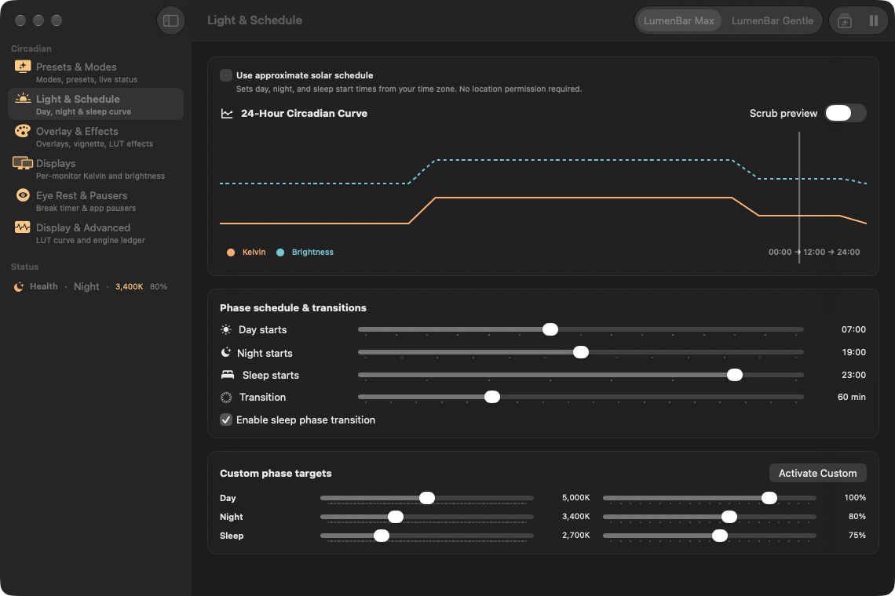
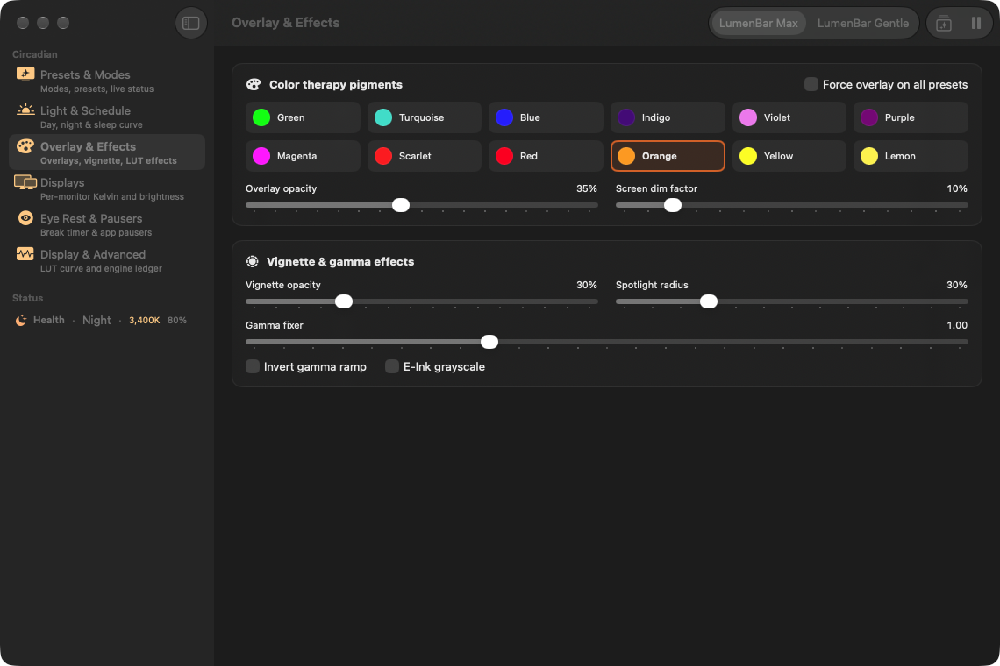
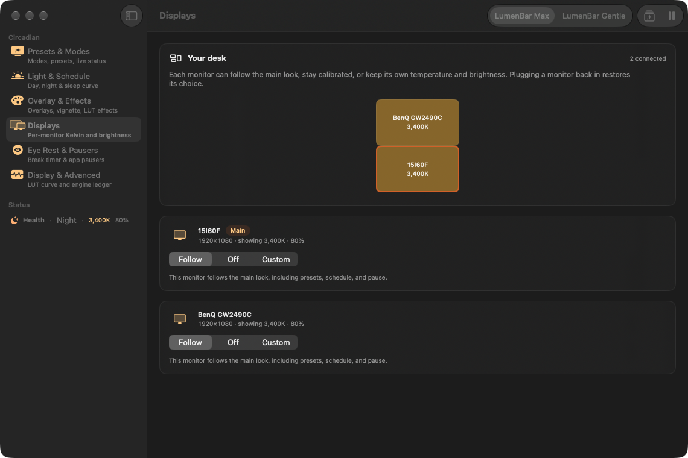
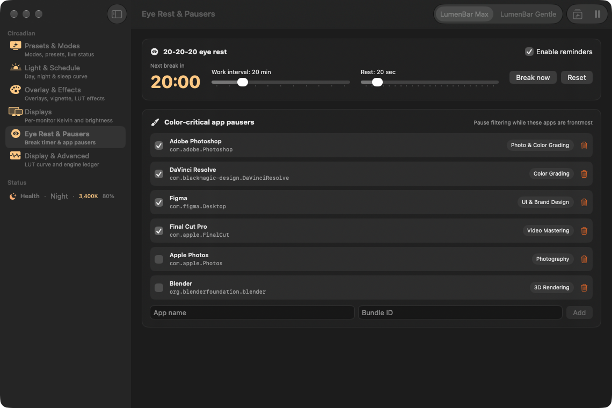

The problem
At night, a bright screen
is still noon.
The fix
Hardware gamma.
10000K down to deep amber.
A native filter. Smooth cross-fades between looks. 0K to 10000K.
Modes
Automatic
A day, night, and sleep curve that moves with the clock.
Manual
Hold the look you chose, whatever the hour.
Paused
Neutral again: 15 minutes, 1 hour, or until morning.

Presets
Eleven presets. Max or Gentle.
Health
Sleep
Reading
Programming
Biohacker
Sunglasses
Dark
Movie
Overlay
Gaming
Custom

Schedule and effects
A solar estimate.
No location needed.
Tint, dark vignette, or E-Ink grayscale for reading. The day previews as one curve.
New this release
A multi-monitor desk.
Follow the main look, turn a display off, or give it its own Kelvin and brightness. Plug one in, and it re-applies.


Eye rest
20-20-20, full screen.
A quiet sound cue when the break starts. Color-critical apps auto-pause the filter.
Always there
Live Kelvin, in the menu bar.
⌃ ⌥ ⌘ P
Pause
⌃ ⌥ ⌘ M
Cycle preset
No account
No cloud
No telemetry
LumenBar
Free for macOS 26 · Apple silicon
github.com/Sheshiyer/lumen-bar